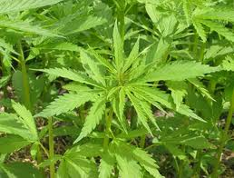

Marijuana: Marijuana is produced primarily from the dried leaves of the Cannabis sativa plant. The active ingredient in marijuana is the chemical, tetrahydrocannabinol (THC). THC is thought to prevent a neuron’s uptake of a common neurotransmitter called acetylcholine, thereby preventing neural stimulation. Marijuana is also classified as a hallucinogen because it alters the users’s normal thoughts and mood. Marijuana intake causes relaxation and gives one a sense of well-being. It also impairs a person’s coordination and visual acuity. Consequently, being high on marijuana severely interferes with one’s ability to operate a vehicle. Heavy use of marijuana has also been linked to various serious lung disorders, addiction, and low sperm counts.

Hashish is a highly addictive form of marijuana derived from the resin secreted from the leaves and flowers of Cannabis sativa plants grown in dry, hot conditions. Hashish causes the same physiological effects as marijuana; however, it does so more quickly and more distinctly.